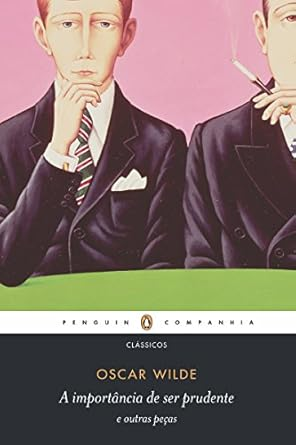

Back
Books
I'm nowhere near the bookworm I used to be, but reading is still one of my biggest hobbies ever. Even though I love fiction, my recent picks have been gravitating towards biographies, sociology, and some cult classics here and there.
I will include titles in Portuguese when I read the Portuguese edition. Please, bear in mind that I read a lot of stuff to build my own views, and reading a book does not mean endorsement.
Order: most recent first. Hover the pictures to see title and author.
- ★☆☆☆☆ bad
- ★★☆☆☆ okay
- ★★★☆☆ good
- ★★★★☆ very good
- ★★★★★ excellent
- ❤ favourite
- ☑ physical copy owned
Reading
") 22%
22%") 46/291 ☑
46/291 ☑") 6/51 ☑
6/51 ☑") 13%
13%") 26%
26%Read
present to 2020
") ★★★★☆ ☑
★★★★☆ ☑") ★★★★☆ ☑
★★★★☆ ☑") ★★★★☆
★★★★☆") ★★★★★ ❤ ☑
★★★★★ ❤ ☑") ★★★★☆
★★★★☆") ★★☆☆☆ ☑
★★☆☆☆ ☑") ★★★★☆
★★★★☆") ★★★★★ ❤
★★★★★ ❤") ★★★☆☆
★★★☆☆") ★★★★★ ❤ ☑
★★★★★ ❤ ☑") ★★☆☆☆
★★☆☆☆") ★★★☆☆
★★★☆☆") ★★★★★
★★★★★") ★☆☆☆☆
★☆☆☆☆") ★★☆☆☆
★★☆☆☆") ★☆☆☆☆
★☆☆☆☆") ★★★★★ ❤ ☑
★★★★★ ❤ ☑") ★★★★★ ❤ ☑
★★★★★ ❤ ☑") ★★☆☆☆
★★☆☆☆") ★★★★☆
★★★★☆") ★☆☆☆☆
★☆☆☆☆") ★★★★☆
★★★★☆2019 to 2015
") ★☆☆☆☆
★☆☆☆☆") ★★★★☆
★★★★☆") ★★★★☆
★★★★☆") ★★★★☆
★★★★☆") ★★★★☆
★★★★☆ ★★★★☆
") ★☆☆☆☆
★☆☆☆☆ ★★★☆☆
★★★★☆ ☑
") ★☆☆☆☆
★☆☆☆☆") ★★★★★
★★★★★ ★★★☆☆
") ★★★☆☆
★★★☆☆") ★☆☆☆☆
★☆☆☆☆ ★★★★☆ ☑
") ★★★★☆ ☑
★★★★☆ ☑") ★★★★★
★★★★★") ★★★★★ ☑
★★★★★ ☑ ★★★★★ ❤
") ★★★☆☆
★★★☆☆") ★★★★★ ❤
★★★★★ ❤") ★★★★☆
★★★★☆") ★★★☆☆ ☑
★★★☆☆ ☑") ★★★★☆ ☑
★★★★☆ ☑") ★★★★☆ ☑
★★★★☆ ☑") ★★★★★ ❤ ☑
★★★★★ ❤ ☑") ★★★☆☆
★★★☆☆ ★★★☆☆ ☑
 ★★★★★ ☑
★★★★★ ☑ ★★★★★ ☑
★★★★★ ☑") ★★★★☆
★★★★☆") ★★★★★ ❤ ☑
★★★★★ ❤ ☑") ★★★★★
★★★★★ ★★★★★ ❤
") ★★☆☆☆
★★☆☆☆ ★★☆☆☆
★★★★★ ❤ ☑
") ★★★★☆ ☑
★★★★☆ ☑ ★★★★★ ❤ ☑
") ★☆☆☆☆
★☆☆☆☆ ★★★★☆ ☑
★★★★☆ ☑
") ★★★★★ ❤ ☑
★★★★★ ❤ ☑") ★★★☆☆ ☑
★★★☆☆ ☑") ★★★★★ ❤ ☑
★★★★★ ❤ ☑") ★★★★☆ ❤ ☑
★★★★☆ ❤ ☑ ★★★☆☆ ☑
") ★★☆☆☆
★★☆☆☆ ★★★★☆ ☑
★★★★☆ ☑
") ★★★★☆ ❤ ☑
★★★★☆ ❤ ☑") ★★★★☆
★★★★☆ ★★★★★ ❤
★★★☆☆ ☑
★★★★★
") ★★★★★
★★★★★ ★★★☆☆
") ★★★★☆
★★★★☆ ★★★★★
★★★★☆
") ★★★★★ ❤ ☑
★★★★★ ❤ ☑") ★★★★☆
★★★★☆") ★★★★☆
★★★★☆") ★★★★☆
★★★★☆ ★★★★★ ❤ ☑
") ★★★★☆
★★★★☆ ★★★★★ ❤ ☑
") ★★★★☆
★★★★☆ ★★★☆☆
★★★★★ ❤ ☑
★★★★☆
") ★★★☆☆
★★★☆☆ ★★★☆☆
2014 to 2010
") ★★★★★ ❤ ☑
★★★★★ ❤ ☑") ★★★★★ ❤
★★★★★ ❤") ★★★☆☆
★★★☆☆") ★★★☆☆
★★★☆☆ ★★★★★ ❤ ☑
") ★★★★★ ❤ ☑
★★★★★ ❤ ☑ ★★★★☆ ☑
") ★★★★★
★★★★★") ★★☆☆☆
★★☆☆☆ ★★★★☆
") ★★★☆☆
★★★☆☆") ★★★★☆
★★★★☆") ★★★★★ ❤ ☑
★★★★★ ❤ ☑") ★★★★☆
★★★★☆") ★★★★☆
★★★★☆") ★★★★☆
★★★★☆") ★★★★☆
★★★★☆") ★★★★☆
★★★★☆ ★★★★☆
★★★★☆
★★★★☆
") ★★★★☆
★★★★☆") ★★★★★ ❤ ☑
★★★★★ ❤ ☑") ★★★★★ ❤ ☑
★★★★★ ❤ ☑ ★★★★★ ❤ ☑
") ★★★★★
★★★★★") ★★★★★ ❤
★★★★★ ❤ ★★★☆☆
★★★★★
★★★★★
") ★★★★★ ❤ ☑
★★★★★ ❤ ☑ ★★★☆☆
 ★★★★★ ❤ ☑
") ★★☆☆☆
★★☆☆☆ ★★★★★ ☑
") ★★★★★ ❤ ☑
★★★★★ ❤ ☑ ★★★★☆
") ★★★★★ ☑
★★★★★ ☑") ★★★★★ ❤ ☑
★★★★★ ❤ ☑") ★★★★★ ☑
★★★★★ ☑ ★★★★★ ❤ ☑
★★★★★ ☑
★★★★★ ❤ ☑
") ★★★★★ ☑
★★★★★ ☑ ★★★★☆ ☑
★★★★★ ☑
★★★★★ ☑") ★★★★★ ❤ ☑
★★★★★ ❤ ☑ ★★★☆☆
") ★★★★★ ☑
★★★★★ ☑") ★★★★★ ❤ ☑
★★★★★ ❤ ☑ ★★★★☆
") ★★★★☆
★★★★☆") ★★★★☆
★★★★☆") ★★★★☆ ❤ ☑
★★★★☆ ❤ ☑") ★★☆☆☆
★★☆☆☆") ★★★★☆
★★★★☆ ★★★★★ ❤
") ★★★★★
★★★★★") ★★★★★
★★★★★") ★★★★★
★★★★★") ★★★★★
★★★★★ ★★★★★ ❤
") ★★★★☆
★★★★☆") ★★★★★ ❤ ☑
★★★★★ ❤ ☑ ★★☆☆☆
") ★★★★★ ❤
★★★★★ ❤ ★★★★★
★★★★☆
") ★★☆☆☆
★★☆☆☆") ★★★★★
★★★★★") ★★★★★
★★★★★") ★★★☆☆
★★★☆☆ ★★☆☆☆
") ★★★★☆
★★★★☆") ★★★☆☆
★★★☆☆") ★★★☆☆
★★★☆☆2009 to 2002
") ★★★★★
★★★★★To read
")
")
")
")
")
")
☑
☑
Dropped
") ★★☆☆☆
★★☆☆☆") ★★★★★
★★★★★") ★★★☆☆
★★★☆☆") ★★★☆☆
★★★☆☆") ★☆☆☆☆
★☆☆☆☆") ★★★★☆
★★★★☆Favourite authors